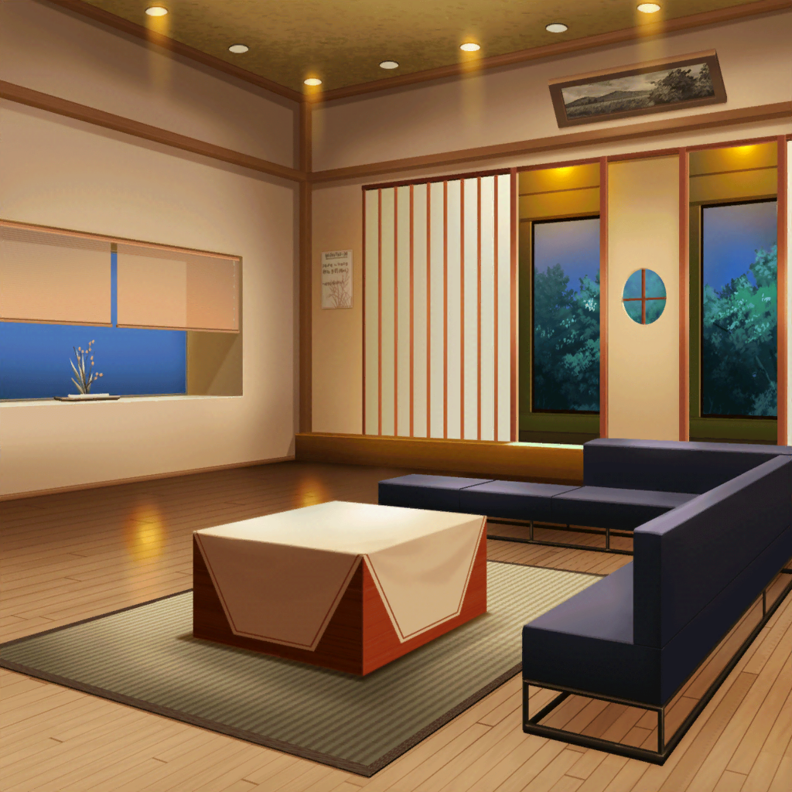

美竹家
蘭の父
蘭、今日学校から連絡があったぞ。
授業に出ていないことがあるそうだな
蘭
……それは……
ちょっと、具合が悪くて……
蘭の父
保健室にもいないと連絡があったぞ。
……授業にでないだけじゃなく、親に嘘までつくとは
感心できないな
蘭の父
学生の本分は勉強なんだ。
明日からはしっかり授業に出なさい。いいな
蘭
……はい
蘭
……

生徒１
美竹さんて、やっぱりちょっとコワイよね
生徒２
うん……ちょっととっつきにくい感じするよね
蘭
（……クラスに居場所がなくて、
屋上にいたなんて言えるわけがない）
蘭
（それに、居場所がない理由だって……こんなこと、
モカ達にだって相談できない……どうすればいい？）
蘭
……そうだ！
翌日
羽丘女子学園 中等部 2-A
先生
え〜、では昨日の続きからはじめましょう。
教科書５４ページを……
蘭
……
蘭
（……この思い……叫び……）
蘭
（冷たい金網に絡まる……感情の……渦……）
先生
……さん、美竹さん！
蘭
は、はい
先生
話を聞いていましたか？
熱心に勉強するのはいいですが、
きちんと授業は受けてくださいね
蘭
……す、すみません……
蘭
（あたしには授業よりももっと、やりたいことがあるのに……！）
羽丘女子学園 中等部 2-B
ひまり
私、今日部活あるから、行くね！ じゃーねー！
巴
アタシは今日、商店街で祭りの太鼓の練習があるんだ。
つぐは、生徒会だっけ？
モカ。悪いけど蘭の様子、見てきてもらえないか
つぐみ
ごめんね……
モカ
ほいほーい。了解。じゃーねー

蘭
うーん……何かいい言葉は……えっと……
モカ
らー……ん……？
蘭
……
モカ
（何か書いてる……？ スケッチでもしてるのかなあ？
そーっと近づいてみよう）
蘭
……
モカ
……
モカ
らーんー
蘭
わっ！？ も、モカ！？
モカ
何書いてんの〜？
蘭
あ、こ、これは、ダメ……っ！！
モカ
えーと……？
『この思い 声を枯らして叫ぶ ここが私の居場所（ステージ）』
『冷たい金網に絡まる紅い感情の渦』……？
蘭
〜〜〜〜〜〜っ！！
モカ
『届くことのない叫び（思い）が黄昏の空に消えていく』
蘭
返してっ！！！！
モカ
『冷たいコンクリート 打ちつける情熱（パトス）』……？
蘭
それ以上はダメっ！！！
モカ
蘭〜。これ、どーしたの？
蘭
……実は……
モカ
自分の気持ちを詩にしてぶつけてた、ってこと？
ほうほう、なるほどね〜
蘭
そうだけど……そう言われると
マジ、恥ずかしいんだけど
モカ
いやいや〜。
蘭の気持ちが手に取るようにわかるいい詩じゃないの〜
モカ
あたし、国語得意だからさ。筆者の気持ちを述べよ、みたいな
問題めっちゃ得意なんだよね〜。
だから、この詩からも筆者の気持ちがわかるっていうか〜？
蘭
からかわないでよ……！
モカ
ううん、ほんとーに。
蘭も大変なんだなーって。
それに、別に恥ずかしがることもないと思うけどなー
蘭
えっ？
モカ
あたしだったら『つらーい なんかたべたーい』しか
出てこないもん
モカ
でもさー、蘭はちゃーんと自分の気持ちをこうやって
詩にできてるじゃん？
蘭
モカ……
モカ
蘭の気持ちが晴れるなら、これからも詩にぶつけていけば
いいと思うよー
蘭
うん……ありがと
モカ
たまには、あたし達にも言ってほしいけどね〜
蘭
何か言った？
モカ
ううん。ひとりごと〜
蘭
てか、さっき国語得意って言ってなかった？
なのに詩は書けないの？
モカ
読み解くのと書くのはまだ別なんだよ〜。
わかってないなあ
蘭
はいはい、そーだね
モカ
（今のあたしには蘭を助けられないんだとしても、
そのノートが蘭を少しでも楽にできるなら、きっと……
それはあたしにとっても、蘭にとっても、いいことなんだよね？）
モカ
（けど……ずっと一番近くにいたつもりだったのに。
さみしいのは、あたしの方なのかもなあ）
モカ
（いつか……あたしが蘭を助けてあげられたら、いいのになあ）